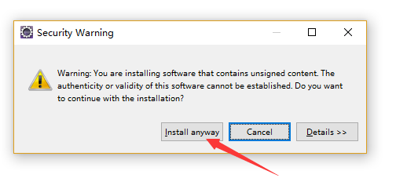

原文出处:本文由博客园博主手下留情提供。
原文连接:https://www.cnblogs.com/lkylin/p/11220495.html
原文连接:https://www.cnblogs.com/lkylin/p/11220495.html
1.安装angularjs插件可以使eclipse和一些前端开发工具一样,让你的前端开发更爽.
2.首先,我们打开eclipse,点击导航栏中的help，如下图所示：
3.找到eclipse marketplace这一项,点击进去,如图:
4.进入之后出现如下图片,在find中搜索angularjs,选择angularjs eclipse,并点击install进行安装,如图:

5.然后出现如下页面,如果只是用于js的话第三项就可以不选.
6.然后点击confirm,选择同意,然后点击finish:
之后eclipse就会进行angularjs的安装,中途如果出现如图警告框时,点击install anyway即可.

7.安装完之后会提示要进行eclipse的重启,点击重启.
8.重启eclipse之后,你想让哪个项目使用angularjs项目,就对项目右键,选择configure,点击Convert to AngularJS Project...,如图:
9.点击之后出现一个选择框,选定Angularjs,然后应用并保存.
10.这样你的angularjs插件就可以使用了.
第一次写博客,有什么错误还请大佬们更正...